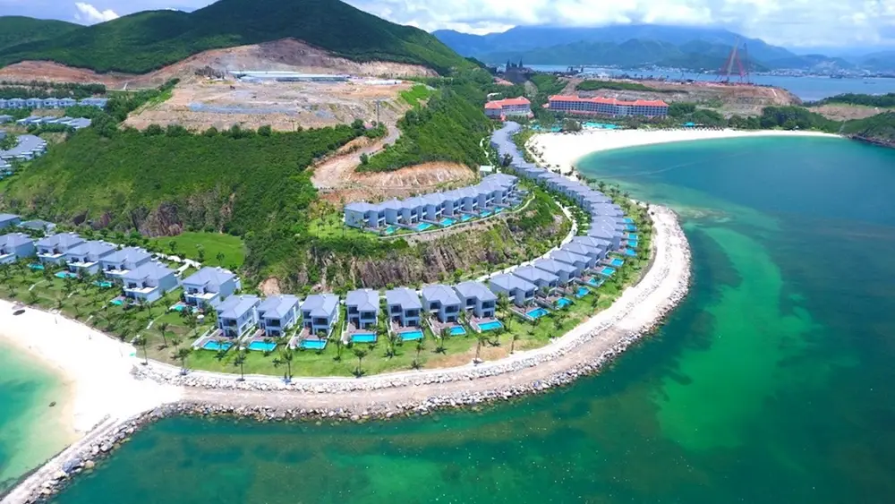
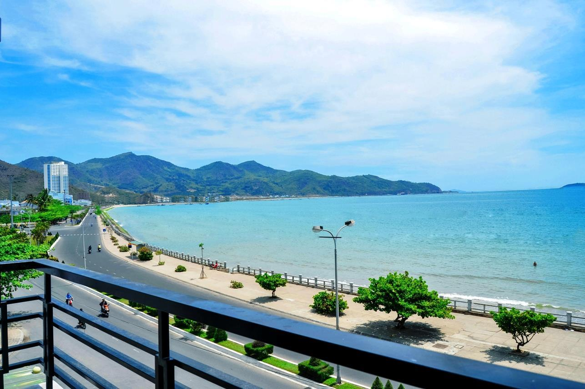
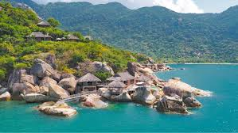
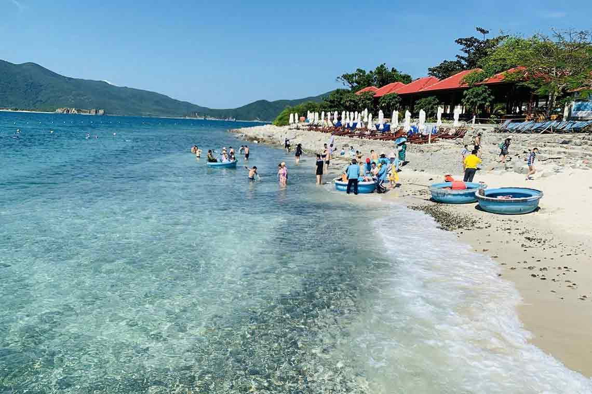

Nha Trang - thành phố biển xinh đẹp của Việt Nam, nổi tiếng với những bãi biển dài cát trắng mịn, làn nước trong xanh và hệ thống resort sang trọng. Dưới đây là top 5 bãi biển đẹp nhất Nha Trang bạn không thể bỏ qua trong mùa hè này.
1. Bãi Dài - Thiên đường nghỉ dưỡng
Địa điểm: Cách trung tâm thành phố khoảng 20km về phía Bắc
Đặc điểm: Bãi biển dài 15km với cát trắng mịn, nước biển trong vắt, ít sóng lớn
Hoạt động: Tắm biển, lặn ngắm san hô, chèo thuyền kayak, chơi các môn thể thao biển
Tiện ích: Hệ thống resort 5 sao, nhà hàng hải sản tươi ngon
Lưu ý: Nên thuê xe máy hoặc taxi để di chuyển vì khoảng cách khá xa trung tâm
2. Bãi Trũ - Bãi biển hoang sơ
Địa điểm: Nằm trên đảo Hòn Tre, cách bến cảng Nha Trang 15 phút đi tàu
Đặc điểm: Bãi biển hình vòng cung với làn nước xanh ngọc bích, ít khách du lịch
Hoạt động: Tắm biển, lặn ống ngắm san hô, chụp ảnh sống ảo
Tiện ích: Có dịch vụ cho thuê dù nghỉ, nhà hàng nhỏ phục vụ hải sản
Lưu ý: Mang theo đồ bơi và dụng cụ lặn nếu muốn khám phá hệ sinh thái biển
3. Bãi Tiên - Vẻ đẹp nguyên sơ
Địa điểm: Cách trung tâm thành phố khoảng 60km về phía Bắc
Đặc điểm: Bãi biển hoang sơ với những ghềnh đá độc đáo, nước biển trong vắt
Hoạt động: Tắm biển, leo núi ngắm cảnh, khám phá hang động nhỏ
Tiện ích: Có khu vực thay đồ và nhà vệ sinh công cộng
Lưu ý: Đường đi hơi khó nên cần đi xe có gầm cao hoặc thuê xe máy địa hình
4. Bãi Ninh Vân - "Maldives của Việt Nam"
Địa điểm: Cách trung tâm Nha Trang khoảng 40km về phía Nam
Đặc điểm: Bãi biển hình vòng cung hoàn hảo với resort sang trọng
Hoạt động: Spa biển, yoga bãi biển, lặn ngắm san hô, chèo thuyền
Tiện ích: Hệ thống villa sang trọng ngay trên biển, nhà hàng ẩm thực cao cấp
Lưu ý: Giá dịch vụ khá cao, phù hợp với du khách muốn trải nghiệm nghỉ dưỡng cao cấp
5. Bãi Sạn - Biển đẹp giữa lòng thành phố
Địa điểm: Ngay trung tâm thành phố Nha Trang, dọc đường Trần Phú
Đặc điểm: Bãi biển dài 7km với bãi cát vàng mịn, nhiều cây xanh tỏa bóng mát
Hoạt động: Tắm biển, chạy bộ bờ biển, tham quan các điểm du lịch gần đó
Tiện ích: Nhiều khách sạn, nhà hàng, quán cà phê view biển
Lưu ý: Đông đúc vào cuối tuần, nên đi sáng sớm để có không gian thoải mái hơn
Mẹo du lịch biển Nha Trang mùa hè:
- Thời điểm đẹp nhất: Từ tháng 4 đến tháng 8, biển lặng và nắng đẹp
- Mang theo kem chống nắng SPF 50+, mũ rộng vành và kính râm
- Giá dịch vụ có thể cao hơn vào mùa du lịch (tháng 6-8)
- Thử các món hải sản đặc sản như tôm hùm, ốc vú nàng, cá mú
- Thuê xe máy giá khoảng 100.000-150.000đ/ngày để tự do khám phá
Với 5 bãi biển tuyệt đẹp này, Nha Trang chắc chắn sẽ mang đến cho bạn một mùa hè đáng nhớ cùng gia đình và bạn bè. Hãy lên kế hoạch ngay để tận hưởng kỳ nghỉ hoàn hảo tại thành phố biển xinh đẹp này!